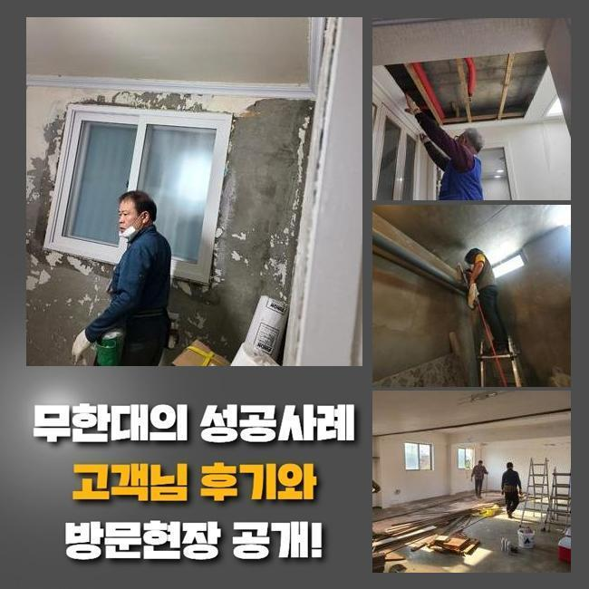
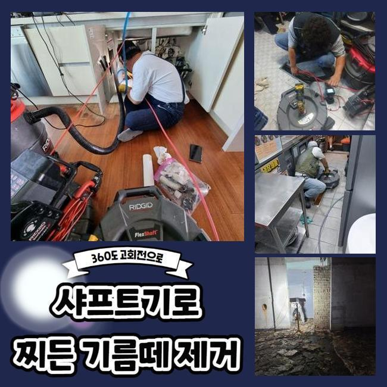
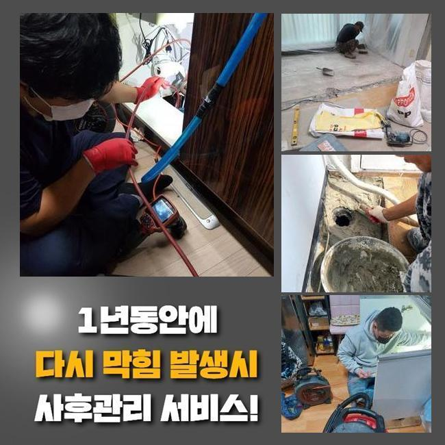
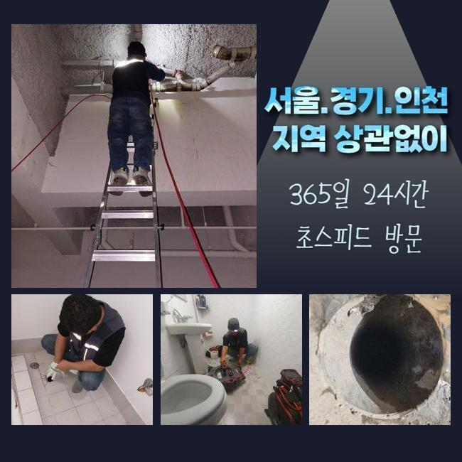
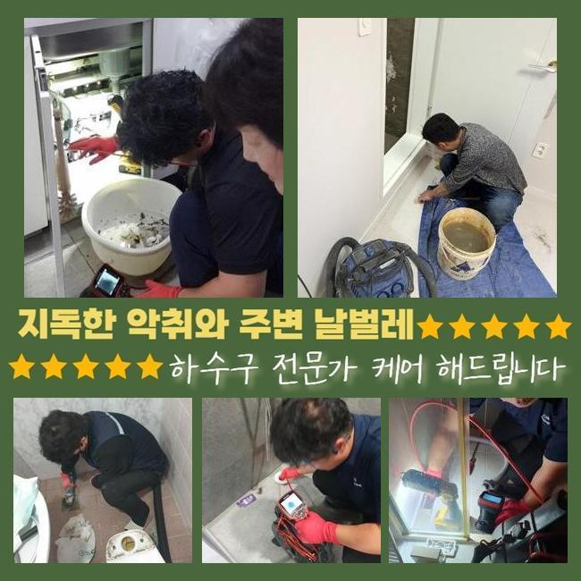

🏠 계양구 박촌동대변기역류 이화동 배수로뚫기 배관설비공사
용인 싱크대막힘 전문 시공 후기

📋 작업 개요
- 위치: 용인
- 서비스 유형: 싱크대막힘, 변기막힘, 하수구막힘, 배관막힘, 역류해결, 뚫는업체, 배관청소, 설비공사
- 작업 일시: 2025. 4. 4. 16:55
- 업체명: 하수구수사대 (010-5615-2118)
🔍 문제 상황
계양구 박촌동대변기역류 이화동 배수로뚫기 배관설비공사
금일에는 사무공간의 개수대에서 야기된 배수장애를 시정한 장소를 말씀드리고자합니다
이해하기 쉽고 효율적인 방법들이 가득하므로 주목해주세요!
사무실이란 스팟에서 생겨난 일이다 보니 자가적으로 뚫어보려는 시도들이 눈에 띄었죠
전문가들은 해결책을 어떤 과정으로 실시하는지 고객님차원에서 각 관로들을 관리하는 꿀팁도 이해되실 수 있게끔 설명드려볼게요
고객께선 평상시에 조리를 위한 장소가 아니였기에 배관막힘이 생기게될 줄 몰랐다고 전해주셨어요
이곳의 경우 식재료를 안쓰는 공간이라서 주기성을 갖춘 관리책 수행이 결여된 사례들이 많은데요
저희업체는 곧장 달려가보았습니다 현장도달 후 하수관을 확인했는데요
우선 육안으로 지켜보았더니 역류하고있던 문제는 없었지만 답답하게 배출되고 있었는데요
배수 정체 시에는 갑작스럽게 압력이 상승하고 역류하게되는 증상들이 나타날 가능성이 높습니다

🔎 원인 분석
💡 전문가 진단: 정밀 진단 장비를 사용하여 슬러지의 고착 여부를 판명하고 타격/세척 작업을 실시했습니다.
그렇기때문에 석션장비로 알려진 전문기계를 꺼내 입구 근처의 찌꺼기들을 빨아당겨주었습니다
석션장비는 점검과정보다 먼저 시야들을 밝히기위해 사용되고 고착되지 않은 이물들을 제거할때 효과좋은 역할을 맡고 있어요
석션바구니에 오수들이 담겨있었지만 아직도 느린속도로 흘러갔는데요
석션기 사용 다음으론 내시경카메라로 깊숙한 부분도 확인했는데요
내시경케이블을 투입하니 잔해물들이 떡하니 자리잡아 통로길이 협소하게 되었는데요
식자재 취급을 할 수 없는 곳인데 어째서 이물들이 쌓이게된건가 의문이 들 수 있겠으나 사무공간일 경우에는 철저히 청소들이 간과되는 사안이 많아서입니다
그리하여 과자나 커피 잔해물 기름성분이 뒤섞여 고착물을 만들어내요
내시경도구로 하수도를 체크해보면서 샤프트도구로 흡착물들을 타겟으로 해 점차 배관을 청소해주니 공간들이 만들어지며 통로들이 넓어지게 되었습니다
기름들은 내시경에서 붉게 비추기에 이물이 제거된다면 영상도 깔끔히 탈바꿈되는것을 관찰할 수 있습니다
샤프트운용을 진행시켰는데도 불구하고 물이 하수관으로 원활하게 안흘러가는 상태였어요
그리하여 대량의 물들을 한꺼번에 흐르게했더니 어느지점인지 고여서 막히게되는 증상들이 보였어요

🔧 작업 과정
오수들이 고여버렸다는건 놓치게된 요소들이 존재한다는 시그널이에요
슬러지말고도 여타 트리거들이 존재한다는 걸 가르키기에 집수시설까지 체크할 여지가 충분했죠
저희전문인들은 지속적인 싱크대배수 정체의 연유를 파헤치기위하여 내시경 라인을 깊숙한 지점으로 넣어주었어요
끝내 알게된것은 배수관의 일부분들이 바닥라인에 들어간 상태가 아닌 바깥으로 드러난 채로 자리했다라는 점이였죠
실내에서 내시경장치로 확인시키는것이 쉽지않아 외부로 나가 역방향으로 장비들을 이용할 수 있게끔 구멍을 뚫어주고 구멍을 통하여 내시경 내시경 라인을 밀어넣었습니다
내시경기기의 줄을 넣으니 다시금 막혀버린 공간을 찾아냈어요
오피스의 개수대에선 이 스팟의 하수도와 별개인 상태였고 욕실 쪽으로 가는 라인과 외부로 뻗어나가있는 구조였어요
그 라인을 따라가보니 세면대로 빠지는 위치에 사이즈가 컸던 오염물이 하수관을 좁히게했던 실정이었습니다
싱크대쪽의 하수관이 아니라 뜻밖의 장소에 사이즈가 컸던 오염물이 자리잡아 찾아내는데 애를 먹었지만 결국 오랫동안 이어진 막힘사안의 주된 연유를 찾았습니다
수회에 걸쳐 포인트를 확인하고 점검해야하는 지점의 pvc 하수도를 타공하여 폐기물을 제거시켰습니다
배출시켰더니 둥근 고무재질이였는데 어떻게 이용됐는지 알 수 없었지만 크기도했고 특정 구간에 자리잡았을 때라면 통수되는것이 불가능에 가까운 이물질이였습니다
씽크대라인의 배수관과 문제들을 발생하게 만드는 플라스틱까지 청소해주는 수순을 완료했더니 배수과정이 원활하게 되면서 수리들이 마무리되었는데요
더불어 의뢰인분은 악취문제도 문의하셨어요 작업을 하면서도 느꼈지만 악취들도 생겨난걸 확인하게되었어요
트랩쪽에 손상이슈가 보였는데요 배수관부터 정리한 후 호환가능한 트랩부속품으로 교체도 이상없이 해드렸습니다
최종적인 검수를 실시해보고자 탕비실쪽으로 가 개수대에 많은 양의 수도들을 받고서 배수과정을 지켜보니 처음관 다르게 답답한 기색없이 배출되었습니다
골치아팠던 배관정체도 이상없이 해결됐죠


✅ 작업 완료
다행스럽게도 끝끝내 문제의 연유를 쫓아 결국 막힌 까닭을 발견했으며 씽크볼의 사용들도 편하게 할 수 있었죠
위같이 고객께서 장기적으로 불편함이 없게 시공절차를 완료했답니다
사용을 다하시고 수채구멍으로 기름들과 찌꺼기가 빠지지않도록 주의해야하고 점검도 때때로 진행해주시면 좋습니다
저희업체는 재발걱정을 하지않을 수 있는 작업수순에 몰두하고 있어요 이에 작업하면서 작업들을 끝내고 배수관들이 또 같은 증세가 야기되면 금방 달려가 as들도 제공해드려요
하수관이 막히게되어 전문진의 출장을 고려하는 중이시라면 저희전문진에게 의뢰해보시는건 좋은 선택이 될 것입니다!



⚠️ 주방 싱크대 배관 막힘 예방 수칙
- ✅ 기름기가 묻은 식기나 프라이팬은 설거지 전 키친타올로 반드시 기름때를 닦아내세요.
- ✅ 주기적으로 싱크대 개수대에 뜨거운 물을 가득 받아 한 번에 내려 배관 내부 기름을 씻어내세요.
- ✅ 배수구 거름망을 미세한 필터로 사용하시고 음식물 찌꺼기가 틈으로 새어 들지 않게 관리하세요.
- ✅ 베이킹소다와 식초를 뜨거운 물과 함께 일주일에 한 번씩 부어주면 배관 살균과 막힘 예방에 좋습니다.
💡 핵심 정리
- 확실한 장비 작업(내시경 점검 및 샤프트 스케일링)으로 원인을 뿌리 뽑습니다.
- 작업 후 1년 이내에 동일한 부위 재발 시 100% 무상 A/S 서비스를 보장합니다.
- 서울 · 경기 · 인천 전 지역에 24시간 언제든 긴급 출동할 수 있도록 항시 대기 중입니다.
❓ 자주 묻는 질문 (FAQ)
🚨 용인 싱크대막힘 문제로 고민이신가요?
정확한 원인 진단과 확실한 시공으로 재발 없는 해결을 약속드립니다.
24시간 긴급 출동 | 서울 · 경기 · 인천 전지역 | 1년 내 재발 시 무상 A/S